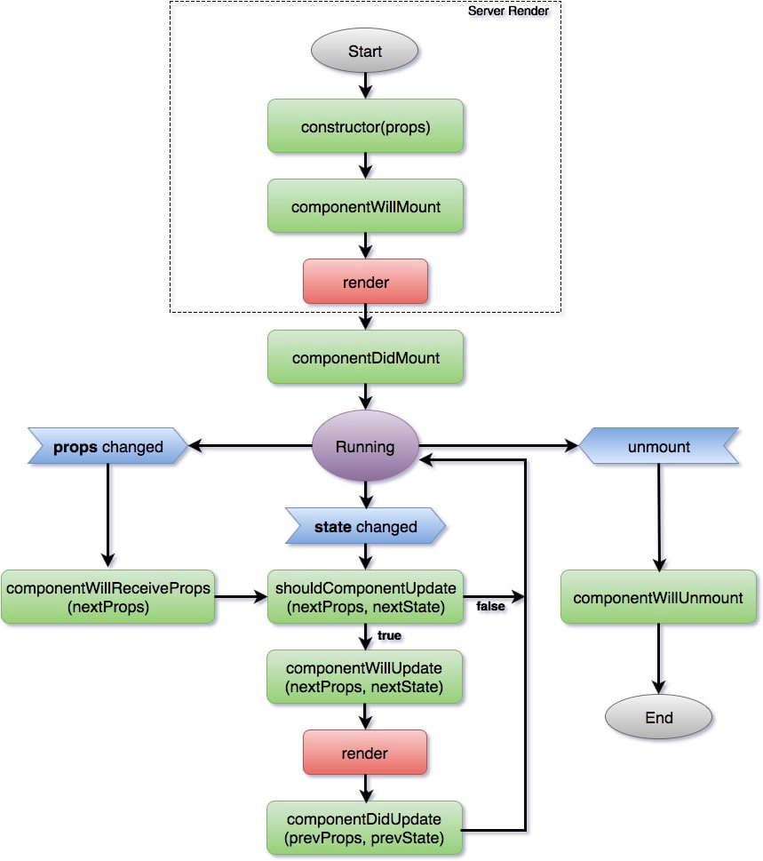

Part 3介紹了React Component的基本用法，包括render()、custom styles和layouts，這些都是顯示UI用到的，但要處理數據、回應user input等等，就要先理解Component的Lifecycle。
Overview
Lifecycle methods是React提供的原生功能，component有任何變動時，React會按情況執行各種lifecycle methods。所以，幾乎所有component需要做的事，都會寫在這些method裡。
官方介紹
React - State and Lifecycle
React.Component API Reference
總覽圖
以下是「甚麼情況會trigger甚麼method」的總覽：

Reference
（注：由React 16.0.0開始Lifecycle有小改動，但原理一樣，所以這篇按原本的架構講解）
最常用到的有：
- constructor：建立state等等
- render：這個必須的啦
- componentDidMount：Ajax call拿data，然後觸發re-render
常用Methods
constructor
constructor(props) {
super(props);
this.state = {
value: 0
}
}
componentDidMount
componentDidMount() {
axios
.get("https://mybackend.com/api/v1/data")
.then(response => {
this.setState({ value: response.value });
})
.catch(err => {
console.log("Error");
});
}
shouldComponentUpdate
每次data有改動，React都會計算DOM diff，決定甚麼component需要update，預設這些component收到訊號後會直接update。
但有時這些受影響的component也不一定需要re-render，這樣的話很浪費效能。這時我們可以用shouldComponentUpdate來自行決定甚麼情況才update這個component，提前return，免除多餘的comparison。
shouldComponentUpdate(nextProps, nextState) {
if (nextProps.id === this.props.id) return false;
return true;
}
PureComponent
一般component的shouldComponentUpdate會自動return true，我們在可以override它來自定規則，但如果每個component都寫一次那就很麻煩了。
於是React提供了一個方便又提升效能的component - PureComponent。
PureComponent is exactly the same as Component except that it handles the shouldComponentUpdate method for you. When props or state changes, PureComponent will do a shallow comparison on both props and state. Ref
不要mutate object
用PureComponent要很小心確保你的props和state裡的object不會mutate，意思就是如果object有任何改動，都會成為一個新的object，例如：
const obj = {name: "hello world"};
// Mutated
obj.name = "Changed";
// New object
const new_obj = {...obj, name: "Changed"};
// or
const new_obj2 = Object.assign(obj, { name: "Changed" });
小結
- Component - 計算diff後按需要re-render
- Component with shouldComponentUpdate - 計算diff後自行決定甚麼情況要update
- PureComponent - 計算diff後shallow compare所有props和state